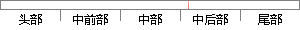

其表示了样本属于C的概率大小。
片段位置图

相似结果|
相似片段 1：x 表示样本点的取值，即跌倒过程中加速度、角速度等特征值构成的特征向量。根据概率的定义， ( i|x)P ? 表示当样本的取值为 x 时，该样本属于 i? 的条件概率，即当样本的加速度大小为 235
相似片段 2：确定这个样本x属于哪一类，这个问题被称为两类分类问题。我们把这两个类别分别用A，和4：来表示，再通过后验概率的大小来判断样本X属于哪一个类别。例如，用P(A，Ix)表示样本z属于类蔓JlJAl的后验概率
相似片段 3：c。中的样本个数用IC。J表示，则集合s中任意一个样本属于类c。的概率为：E=斜 c㈣那么对于集合S的熵(也就是对集合S划分的不确定度，又称为期望熵值)的计算公式为：H(s)=一∑P,log}(4—5
相似片段 4：，?(??)表示一个样本属于聚类 ??的概率，?(??)表示一个样本属于聚类 ??的概率，?(?? , ?表示样本同时属于聚类??和聚类 ??的联合概率，在本章聚类
相似片段 5：在样本集中出现的概率，P(c，If)表示特征f出现的情况下文本属于白类的概率，M为文本的类别数。(6)优势率优势率(OddsRatio)也叫几率比，适用于二元分类问题，计算公式如下：㈣乩g篱揣 叫，其中
相似片段 6：??∈???∈? (?(??,??)?(??)?(??)) (2.24)其中?(??)和?(??)表示任意一个样本属于类??和??的概率。?(?? , ??)表示任意一个样本同时
相似片段 7：??表示词 t出现的情况下文本属于ic 类的概率，)|( _表示词 t不出现的情况下文本属于ic 类的概率。下面的公式中相应变量的含义与此相同。 )(tIG 的值反映了该词为整个分类所提供的信息量。信息
相似片段 8：(c，)+P(丁)∑P(c，Ir)+P(亍)∑P(c，IT)logP(C，IT) (3．12)其中：P(T)表示特征词T不出现的概率，JP(Cl丁)表示在特征词T发生的条件下文本属于类G的概率，P(C
相似片段 9：图 4-5 SVM概率估计结果图Fig.4-5 Probability estimation results for SVM图 4-5中每行表示分类器对一个样本的预测结果，每列表示一个样本类别。为了
相似片段 10：(x)／q：A(x)亡1，则将个体x划归母体4。如果用e(雄)表示将一个本属于母体4的个体划归以的“错分概率”，用Pd2)表示将一个本属于母体以的个体划归4的“错分概率”，上述贝氏判别准则使“错分
|
※ 片段修改建议 ※
近似词参考：- 表示：暗示 默示 示意 透露表现 表现
- 概率：几率
- 大小：巨细
系统自动生成语句：其暗示了样本属于C的几率巨细。
注：本片段修改建议为系统自动生成，仅供参考。